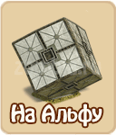

Получено: файл; исходный URL. Первая иллюстрация строки каталога; авторство не подтверждено. Идентичность изображения при замене домена не проверена. Страница: источник.
На Альфу
браузерная версия; платформа и дата редакции не установлены- Тип
- Постройка
- Версия и дата
- браузерная версия; платформа и дата редакции не установлены
Данные по источнику · браузерная версия; платформа не установлена · дата редакции списка не установлена
Предварительно: Прочитан список. Имена файлов пиктограмм приводятся как есть: они не гарантируют идентификацию материала. Alt-атрибуты источника содержат ошибки. Отдельная статья и дата не проверены.. Требуется сверка.
- Сведения из списка, включая имена файлов пиктограмм
- [рисунок: na_alfu.png] Доступна на 1 уровне Купить за: 20 ЗБ Опыт: 1510(10+200+ 500+800) Стадии строительства: 1. 10 [рисунок: bolt.png] +10 [рисунок: Gayka.png] +10 [рисунок: kirpichi.png] 2. 10 [рисунок: fanera.png] +05 [рисунок: Chernila.png] +20 [рисунок: chernij_mramor.png] 3. 15 [рисунок: vata.png] +15 [рисунок: penoplast.png] +05 [рисунок: uglevolokno.png] Производит: Перемещение на остров "Альфа"


Данные по источнику · браузерная игра; платформа страницы не уточнена · 11.01.2014 — публикация; редакция неизвестна
Предварительно: Прочитана конкретная строка; старые сведения, у источника встречаются опечатки. Возможны заимствования, независимость от других сайтов не доказана.. Требуется сверка.
Данные по источнику · историческая браузерная игра, площадка не указана · 05.05.2012 — дата публикации; дата редакции неизвестна
Предварительно: Сопоставлено по единственному точному названию; различные версии или одноимённые объекты могут различаться. Названия файлов и alt пиктограмм сохранены как подписи, не заменяют проверенную расшифровку; изображения и цены требуют ручной сверки. Независимость от zombi-ferma.ru и других сайтов не установлена.. Требуется сверка.
- Текст и пиктограммы источника
- [изображение: m_hypercub.png] Доступна на 1 уровне Купить за: 20 ЗБ Опыт: 1510(10+200+ 500+800) Стадии строительства: 1. 10 [изображение: Болт; bolt.png] +10 [изображение: Гайка; Gayka.png] +10 [изображение: Кирпичи; kirpichi.png] 2. 10 [изображение: Фанера; fanera.png] +05 [изображение: Чернила; Chernila.png] +20 [изображение: Черный мрамор; chernij_mramor.png] 3. 15 [изображение: Вата; vata.png] +15 [изображение: Пенопласт; penoplast.png] +05 [изображение: Углеволокно; uglevolokno.png] Производит: Перемещение на остров "Альфа"
Связанные сущности
нет проверенных связей — требуется сверка.